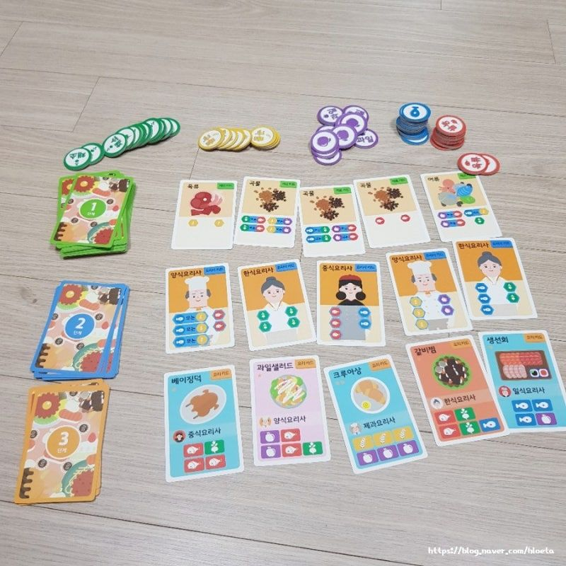
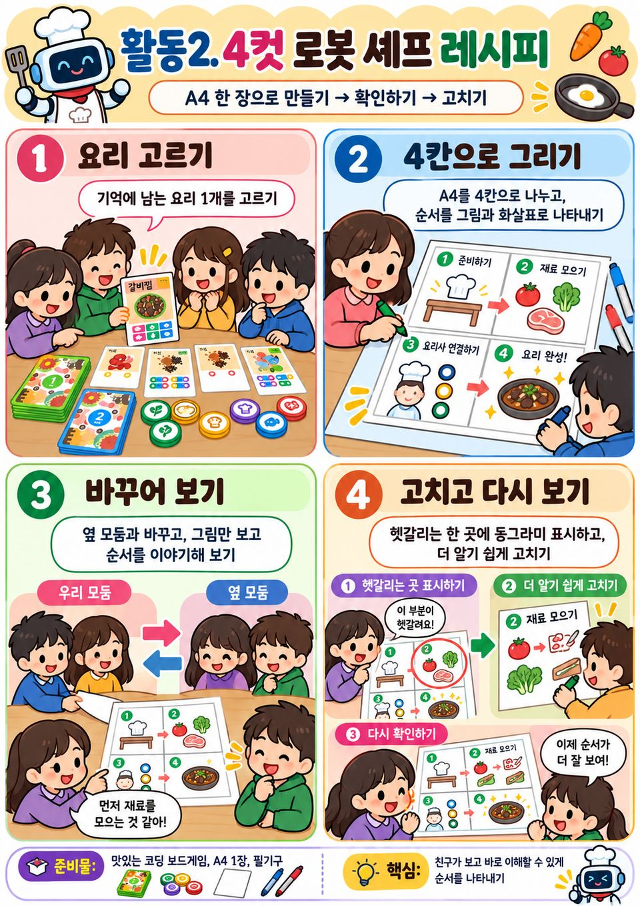

로봇용 그림 설명서를 만들고 사용자 시험으로 헷갈리는 단계 고치기
그림 설명서를 만들고, 다른 모둠이 따라 하며 헷갈린 단계를 고쳐요.
 수업 흐름
수업 흐름
| 단계 | 시간 | 핵심 활동 |
|---|---|---|
| 8분 |
| |
| 32분 |
| |
| 33분 |
| |
| 7분 |
|
 준비물
준비물
 평가
평가
절차를 글 없는 그림 설명서로 표현하고, 다른 모둠의 사용자 시험 결과를 근거로 헷갈리거나 빠진 단계를 찾아 고칠 수 있는가?
평가 기준 자세히
컴퓨팅 사고력 · 알고리즘 표현의 정확성 점검 — 절차를 글 없는 그림 설명서로 표현하고, 다른 모둠의 사용자 시험 결과를 근거로 헷갈리거나 빠진 단계를 찾아 고칠 수 있는가?
| 수준 | 평가 기준 |
|---|---|
| 매우 잘함 | 한 단계에 한 동작씩 빠짐없이 나누어 그림 설명서를 만들고, 방향·개수를 화살표와 숫자로 분명히 나타낸다. 사용자 시험 기록을 근거로 막힌 칸을 헷갈림과 빠짐으로 나누어 까닭을 설명하고, 고친 설명서로 다시 시험해 막힘이 줄었음을 확인한다. 갈림길이 필요한 칸도 찾는다. |
| 잘함 | 그림 설명서를 완성하고 사용자 시험에서 막힌 칸을 찾아 고친다. 고친 까닭을 한 문장으로 설명한다. |
| 보통 | 그림 설명서를 만들었으나 한 칸에 여러 동작이 섞이거나 단계가 빠졌고, 막힌 칸을 고친 까닭이 시험 기록과 이어지지 않는다. |
| 노력요함 | 교사가 단계 나누기와 픽토그램 약속을 함께 확인해 준 뒤에도 절차를 그림 단계로 나타내거나 막힌 칸을 찾아 고치는 데 어려움이 있다. |
| 미관찰 | 결석이나 미제출로 확인하지 못한 경우. 낮은 성취로 적지 않고 따로 기록한 뒤 보충 확인 시점을 정한다. |
평가 방법 산출물 분석(고치기 전후 그림 설명서) · 사용자 시험 관찰 기록지 분석 · 구술 확인
 체험 게임
체험 게임
 연동 도구
연동 도구
과정안에 나온 도구예요. 수업 전에 학교망에서 열리는지 확인해 주세요.
이 차시는 외부 도구 없이 종이·실물로 해요.
내 수업 링크 걸어 두기
학급 패들렛, 엔트리 작품처럼 이 차시에 쓸 링크를 걸어 둬요. 이 브라우저에만 저장돼요. 학생 이름이 든 주소는 넣지 마세요.
 과정안 전문 펼치기 개요·교수학습 활동·그림
과정안 전문 펼치기 개요·교수학습 활동·그림
개요
| 성취기준 | [5실SW02-01] 놀이를 통해 알고리즘을 체험하고, 문제를 해결하는 절차를 다양한 방법으로 표현한다. 연계 성취기준: [6실05-01], [06자율-2] |
|---|---|
| 핵심 역량 | 지식정보처리 역량, 협력적 소통 역량 |
| 핵심 기능 | ① 일상생활의 문제를 해결하기 위한 알고리즘 구상하기 ② 한 단계에 한 동작씩 절차 나누기 ③ 절차를 글 없는 그림 설명서로 표현하기 ④ 다른 모둠의 사용자 시험으로 헷갈리거나 빠진 단계 찾기 ⑤ 한 가지 뜻으로 읽히게 고치고 다시 시험하기 |
| 가치 태도 | 생활 속에서 컴퓨터를 활용해 해결 가능한 문제를 탐색해 보려는 자세 짝이 멈춘 곳을 내 설명서에서 빠진 곳으로 받아들여 고치려는 자세 |
교수학습 활동
7차시도입8분
동기 유발
- 해결단 4호 미션: 글을 못 읽는 ‘고지식한 로봇’에게 그림 설명서 만들어 주기
- 글 없이 그림만 있는 조립 설명서 예시 살펴보기
- ‘교사 로봇’이 애매한 그림 한 칸을 보고 엉뚱하게 움직이는 장면 보기

학습문제 제시
- 로봇용 그림 설명서를 만들어 다른 모둠이 글 없이 따라 하게 하고, 헷갈리거나 빠진 단계를 찾아 고쳐 봅시다.
준비물필기구
자료해결단 4호 미션 카드, 글 없는 그림 설명서 예시, [도입] 상황 그림
유의점교사는 그림에 그려진 대로만 움직여 애매한 칸에서 생기는 일을 보여 준다.
유의점B03은 명령 순서 오류, B05는 갈림길 판단 표현을 고치는 차시임을 알려 준다.
유의점이 차시의 도달점은 한 가지 뜻으로만 읽히는 표현(명확성)임을 알린다.
7차시전개32분
활동1. 과제 고르고 단계 나누기 (10분)
- 과제 카드 고르기: 종이컵 탑 쌓기·색 블록 줄 세우기·필통 정리
- 완성 모습을 보며 처음부터 끝까지 단계로 나누기
- 한 단계에 한 동작만 담기로 약속하기
- ‘잘’, ‘적당히’처럼 사람마다 달라지는 말에 밑줄 긋기

활동2. 로봇용 그림 설명서 만들기 (22분)
- 픽토그램 약속 익히기: 손·화살표·숫자·✕ 표시
- 접이식 설명서 칸마다 번호와 동작 그림 하나씩 그리기
- 방향·개수·위치는 화살표와 숫자로 분명히 나타내기
- 설명서에는 글자를 한 자도 쓰지 않기
- 마지막 칸에 완성 모습을 그리고 접어 가리기
준비물종이컵 6개, 색 블록, 색연필, 접이식 설명서 종이(A4 8칸)
자료과제 카드 3종(완성 모습 사진), 픽토그램 약속 카드, [활동1] 단계 나누기 예시표
유의점단계 수는 학급 전체에 하나로 정하지 않는다.
유의점그림 솜씨가 아니라 따라 하는 사람이 헷갈리지 않는지를 본다고 먼저 알린다.
유의점느린 학습자는 픽토그램 약속 카드의 그림을 오려 붙여 칸을 채우게 한다.
유의점빠른 학습자는 ‘반복’ 표시(×3)를 넣어 칸 수를 줄여 보게 한다.
8차시전개33분
활동3. 글 없이 따라 하는 사용자 시험 (18분)
- 설명서를 옆 모둠과 바꾸고 만든 모둠은 말없이 지켜보기
- 시험하는 모둠은 그림에 있는 대로만 하고 짐작하지 않기
- 헷갈린 칸에는 ‘?’ 스티커, 멈춘 칸에는 ‘■’ 스티커 붙이기
- 만든 모둠은 관찰 기록지에 칸 번호와 실제로 한 일 적기
- 접어 둔 완성 모습을 펼쳐 결과와 비교하기

활동4. 헷갈리는 단계·빠진 단계 고치기 (15분)
- 스티커 붙은 칸을 ‘헷갈림’과 ‘빠짐’으로 나누기
- 헷갈리는 칸은 화살표·숫자를 더해 한 가지 뜻으로 고치기
- 빠진 단계는 새 칸을 만들어 끼워 넣기
- 고친 설명서로 다른 모둠에게 다시 시험받아 스티커 수 비교하기
- 내가 고친 칸과 까닭을 개인 기록란에 적기
- 경우에 따라 할 일이 달라지는 칸에 갈림길 표시하기
준비물‘?’·‘■’ 스티커, 완주 스티커
자료사용자 시험 관찰 기록지, [활동3] 설명서 바꿔 따라 하기 장면 그림
유의점시험하는 동안 만든 모둠은 말이나 손짓으로 돕지 않게 한다.
유의점막힌 칸을 따라 한 모둠의 잘못으로 다루지 않고, 설명서에서 무엇이 헷갈렸는지 되묻는다.
유의점처음 설명서는 지우지 말고 고친 칸에 색 테두리를 치게 한다.
유의점이동이 어려운 교실은 모든 과제를 책상 위에서 하게 한다.
8차시정리7분
배운 내용 정리 (5분)
- 고치기 전후 스티커 수를 모둠별로 발표하기
- 로봇에게 주는 절차는 한 가지 뜻으로만 읽혀야 함을 정리하기
- 갈림길 표시가 필요했던 칸을 모둠끼리 비교하기
다음 차시 예고 (2분)
- 갈림길까지 약속된 기호로 나타내는 ‘순서도’를 배운다는 안내 듣기
- 그림 설명서와 관찰 기록지를 함께 정리해 내기
준비물별 스티커
자료고친 그림 설명서, 사용자 시험 관찰 기록지
유의점표시해 둔 갈림길은 다음 차시 순서도의 판단 기호로 다시 쓴다.
유의점쓰기를 어려워하는 학생은 말로 확인하고 지원한 사실을 적어 둔다.
유의점모둠 설명서 결과로 개인 성취를 대신 판단하지 않고 각자 고친 칸 기록으로 본다.